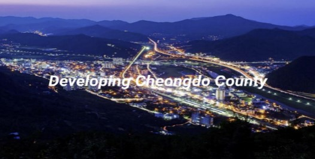

Urban Change-Making
A proposal for implementations that might be helpful to revive the Cheongdo, a small county in South Korea.
Overview
Cheongdo is an old and small county in North Gyeongsang Province, South Korea. I am familiar with this county because it is my mother’s hometown, and her uncle’s family has lived there for their whole life. When I was a little kid, I always thought there should be more infrastructure for me to spend time with when my grandparents and parents were doing some work. There was no place for the children except the schools and supermarkets to get snacks. However, those were not easily accessible because we did not have a way to walk there, and it would take over 30 minutes even if we had a way to talk to the place for child. For now, I can see the improvement for the small kids, but I still consider that Cheongdo needs to work to provide a better environment for the children. So, I want to implement the infrastructure for the children to make the young parent generation stay in Cheongdo.
INDICATE THE CHALLENGE BY UNDERSTANDING THE NEEDS
Before I started to build up some implementations to solve this situation, I had to make sure that the residents of Cheongdo were thinking the same way as me. I decided to talk to my grandparents and aunt, who have lived there their whole life. Furthermore, my aunt has two children and is the head of a parents’ association for a kindergarten and a school for her kids. Additionally, my grandmother is a member of women’s society, and my grandfather operates a motorcycle repair shop. So, I thought they could help me to learn about the needs of the people, not only them but also the community members. Most of their needs are the improvement of the environment for the children. There could be some curiosity about why older people also want to have the infrastructure for the kids. It is because, as I mentioned, Cheongdo is an old county, so many grandparents are willing to create the environment for their grandchildren. Accordingly, the most critical challenge for Cheongdo is building the infrastructure for the kids.
INDICATE THE STAKEHOLDERS
By resolving this challenge, the county government will also be the key stakeholder to the kids, parents, and grandparents. Since the county government has the most substantial power to fund and execute actual development, the county government should be categorized as managed closely. In addition, they are interested in improving the county for the rising generation because they need them to stay in Cheongdo and keep up with their economy. Parents and grandparents are labeled as a keep informed part whose interest is at a high level, but the influence is at a low level. This is because they do not have the power to make the improvement. They only can give some feedback, and their need to let the government and planning office know before actual implementations. Then, the government and planning office will negotiate the types of development and price. We define this as a placation from degrees of tokenism from a ladder of citizen participation (Arnstein). The last stakeholder, the kids themselves, are classified as a group to monitor because most kids are not interested in building some infrastructure for them. They are satisfied with life there since they never experience a better environment to make them think about improvement. Kids do not have a significant amount of power and interest to be the higher level of stakeholders.
DEFINE CRITICAL IMPLEMENATIONS
As I talked with two key stakeholders: the young parents' generation and grandparents, I realized there should be two big implementations before anything else.
Children's Hospital
The most critical and urgent construction for Cheongdo. Since they do not have the infrastructure for the children's health, parents and kids need to drive to Daegu or Gyeongsan to get health care. They have hospitals for adults, but since their hospitals' purpose is not for the child, they do not happily care about the kids, especially in Cheongdo. She said going to the adult hospital was not a good experience. The dentist's facial emotion changed when she brought her son to an adult dental hospital. He was not that sensitive and unkind to her when she and her parents went there, but he switched his attitude towards her because of her son, which should not have happened. After that terrible experience, aunt started to go to Daegu and Gyeongsan to provide better conditions of care to her kids by driving a minimum of one hour. If we construct the children's Hospital, parents would be comfortable, and it would require less time because they do not need to drive to cities nearby Cheongdo. The most valuable advantage is that children can feel less nervous. Since kids are so sensitive and easily influenced by other people's facial emotions, especially adults, specialized doctors for children would create a comfortable environment for them. For this solution, there will be no disadvantage because covering the shortage of child care is essential for our future.
Public Sports Facilities
A vital development for Cheongdo. Since it does not have a tremendous walkable road, many cars are on the streets. However, children are directly exposed to the safety matter because they must play on the road or the small playground of the apartment or the school. Since Cheongdo has some roads which do not have traffic lights for the car and people, it is dangerous to the children. Parents take their kids to the grandparents’ old house and create the foldable inflatable swimming pool. They cannot do that if their grandparents do not have a big garden. Also, they have only one taekwondo academy to use their energy. So, if we construct a sports center for children, they can visit the center to spend time learning and playing with their friends in a safe place. This facility also can have the role of wraparound care. Since Cheongdo has lots of double-income families, parents are looking for a wraparound care system in a secure place. People might think that grandparents can care for the kids, but they do not have enough energy to care for their grandchild for at least five days of the week for almost half of the day. Additionally, they have their schedule with their business. So, I think public sports facilities for children are a good implementation plan to provide opportunities for our stakeholders to concentrate on their programs and lives to keep their families. However, it could cause the separation of the family, which means family members will not be as close as before because they will not spend lots of time with one another as before.
Conclusion
To revive and keep the rising generation at Cheongdo, we should plan the infrastructure development for the children's service. The county government has the most power and interest in this implementation, but this will influence parents, grandparents, and children. So, checking their needs was the most important to build up the plan. Then, I realized that we need to build some children's hospitals and public sports facilities for the kids to provide more convenience for the parents of the rising generation and the grandparents' generation because they do not need to drive farther for the child clinics and consider the babies' schedule when their scheduling.